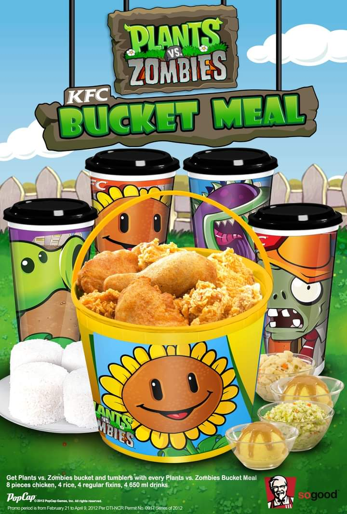

ABOUT

About the Game
Publisher
Electronic Arts
Developer
POPCAP
Platform
PC or Mobile
Languages
English, German, Spanish, French, italian
Release Date:
August 9,2020
Description
What do you do when there's a zombie on your lawn? If you answered "start planting flowers to defeat it," then you've likely heard of Plants vs. Zombies. Armed with dozens of zombie-zapping plants, from the classic peashooter to the devious cherry bomb, you'll need to think fast and plant faster to stop all types of zombies dead in their tracks. And just when you think you've got a handle on things, obstacles like a setting sun, creeping fog, and a swimming pool add to the challenge. With 5 game modes to dig into, the fun never dies!
Features
Uproot 49 Powerful PerennialsA mob of fun-loving zombies is about to invade, and your only hope is an arsenal of zombie-zapping plants. Use peashooters, wall-nuts, and cherry bombs. Collect coins to buy a pet snail, power-ups, and more. |
Clash against 26 types of zombiesTake on pole-vaulters, snorkelers, and even bucket-heads. Want to learn more about foes like Disco Zombie? Read through the Suburban Almanac to find out what makes them tick. |
Explore some sweet, new bonus contentAdd even more fun to the suburban sprawl. Make your own zombie with the Zombatar, and earn achievements like Lawn Security and SPUDOW! |
Battle all 50 levels of Adventure modeThrough day, night, and fog, in a swimming pool, and on the rooftop. |
Experience the actionExperience the action hit that’s won more than 30 Game of the Year awards. |
Enjoy infinite replayability
The game is never the same experience
twice. Experience the action hit that’s
won more than 30 Game of the Year awards. |
Take on 5 different game modesBattle across all 50 challenging tower defense levels in Adventure Mode, then try your hand at fun Mini-Games and other challenges. Test your brain in Puzzle Mode (just be sure to protect it from the zombies!), stay alive as long as you can in Survival Mode, and nurture your plants in the stress-free Zen Garden. |
Fun Facts
|  | ||
| The game was planned to be called “Lawn of the Dead” obviously, is a pun of the 1978 George Romero zombie film Dawn of the Dead. Due to legal reasons, the title had to be changed to the current Plants vs. Zombies. | KFC had a cross-promotion with Plants vs Zombies back in 2013. There were also 8 different toys you can collect if you purchased a chaki kids meal, but these were exclusive to South East Asia. |
Doom-Shroom's Almanac entry has him say,
"You're lucky I'm on your side". A theory as to why he says this is that mushrooms do not belong to the Plant kingdom, Plantae, mushrooms belong to the Fungi kingdom. Because of this, it could be inferred that the fungi chose to assist Crazy Dave and the Plants during Zomboss' invasion, making the Plants lucky that Doom -Shroom is on their side. |